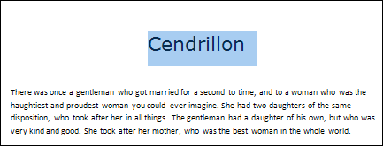
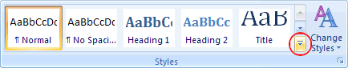
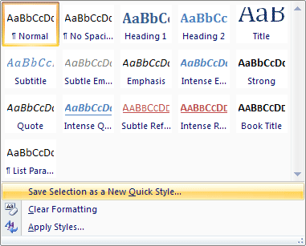
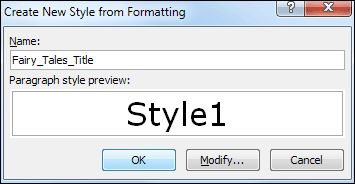
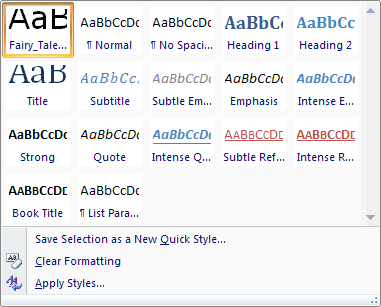
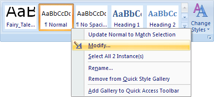
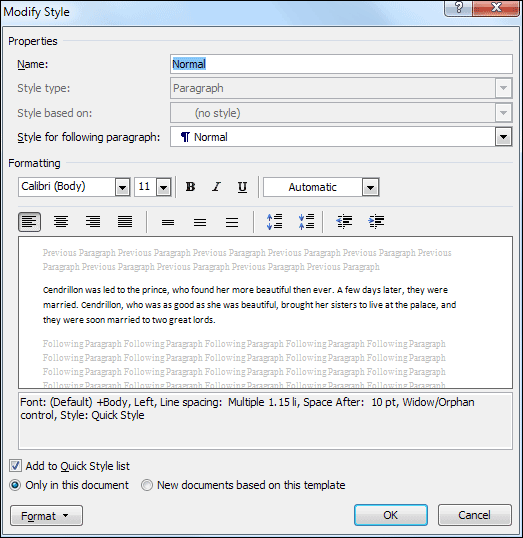
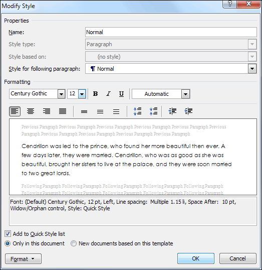

Free
computer Tutorials
|
Free
computer Tutorials
|
|
 home home |
|
|||||
Microsoft Word 2007 to 2010Creating your own StyleThe Home tab contains the Styles panel, which is quite large. Styles refer to the font and formatting options that you can use to quickly change some text on your page. Some Inbuilt ones are Heading1, Heading2, Normal, and Title. What we'll do is to create our own styles, one for the titles of the stories and one for the body text. We'll set up a style for the titles first.
Highlight the title of the story, which is Cendrillon. Now select a font and font size. We've chosen Verdana at a size of 24 points, but feel free to select a different font and font size. From the Paragraph panel on the Home tab, centre your title. Your page should then look like this: (Make sure you don't deselect your heading.)  From the Styles panel click the bottom arrow on the list of styles, circled in red below:  When you click the arrow, you should see a list appear. Select the item that says "Save selection as a new quick style":  You should then see a dialogue box appear. Type a name for your style. We've called ours Fairy_Tales_Title:  Click OK and your style will be added to the list:  But the point about creating a style of your own is that you can then highlight some text and choose it from the list. Your selected text will then be formatted to match the style you set up. Click anywhere in your document to deselect the heading.
Adapting an inbuilt styleYou can also adapt a style that has already been set up. We'll adapt the Normal style, shown on the list above, the second item on the top row. The Normal style refers to all of the body text. In other words, all the text that is not a title. To adapt a style, click with your right mouse button on the style you want to change. In our case that is the Normal style:  From the menu that appears, select Modify. When you click Modify, you'll see a dialogue box appear. This one:  The Name of the style you're modifying is at the top (Normal, for us). Under the Formatting heading, you'll see a font dropdown box, along with a size option. You can also use the Bold, Underline, Italics, and alignment buttons. But select a different font and font size from the dropdown boxes:  We've gone for Century Gothic as a size of 12 points. Before you click OK, make sure to select the option in the bottom left that says "Only in this document". In other words, you only want to change the Normal style for this particular document, and not for every document you create. Click OK and the body text of all seven pages of the story will change. (If you've chosen the same font and font size as us, there will now be eight pages to your story.)
In the next lesson, you'll learn about page breaks and section breaks. Page breaks and section breaks --> <--Back to the Word Contents Page View all our Home Study Computer Courses
|
||||||
|